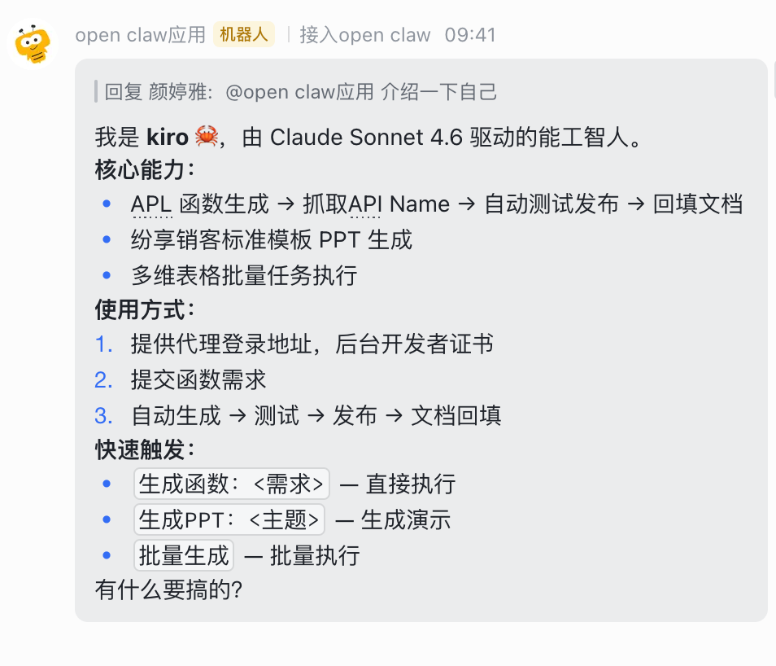

Slide 01
新晋员工“Kiro”，让 APL 开发进入“自动驾驶”时代
需求分析自动推进
飞书群聊与多维表格接入后，可继续自动整理需求并进入后续主链。
代码开发自动完成
对象字段自动拉取、参考校准和代码开发已经能够连续推进。
自动登录系统运行
从需求输入到自动发布已形成连续流程，并支持多项目会话切换。
自动测试持续补强
测试骨架已经接入，后续会继续提升覆盖范围与稳定性。
APL 自动化工作流
delivery workflow system
它要解决的核心，是让 APL 开发从“人工串联各个环节”走向“需求输入后全自动推进”，把需求分析、代码开发、自动测试、自动发布和结果回填串成一条连续流程。

Slide 02
智能体架构：感知、决策、执行与沉淀
Core
Kiro
作为统一工作中枢，持续接住 APL 开发任务，再调动不同能力模块协同推进整条交付链路。
决策中枢
负责任务判断、阶段识别与流程编排，决定当前应进入需求分析、代码开发、测试发布还是经验沉淀。
感知系统
围绕对象、字段、项目资料、项目配置和会话状态进行信息获取与上下文构建，保证输入信息完整可用。
执行系统
在官方文档、项目函数与历史经验的约束下完成代码开发，并继续推进自动测试、自动发布等执行动作。
记忆系统
把结果、耗时、失败与修复经验回填并沉淀下来，形成后续可复用的长期资产与多项目会话基础。
面向 APL 开发的智能体架构
Slide 03
能力矩阵
落地的交付范围
协作入口
需求进入系统的工作面
飞书群聊直接承接需求
需求发起、执行确认与结果同步已能在群聊中完成。
多维表格接入批量入口
批量生成已打通，当前基于约定模板运行。
纷享销客平台侧已衔接
对象字段获取、项目空间与结果发布已接到平台侧。
项目空间
多项目切换的工作面
项目配置按项目独立保存
切换项目时可直接复用该项目的配置与上下文。
会话状态可按项目切换
ShareDev 资产与 session 已按项目隔离管理。
多项目并行已有落点
后续演进为“每个项目一个群聊 / 一个会话”已有明确基础。
参考治理
生成前参考校准的工作面
官方文档作为第一优先级
先依据规范与系统约束校准边界，再进入生成。
项目资产作为第二层参考
优先复用本项目成功函数、对象与字段语境。
历史经验作为补充知识
样例、修复报告与经验记忆用于补齐相似实现。
反馈闭环
结果回写与过程留痕的工作面
飞书回填已接上
函数名、系统 API、状态与反馈可回到协作面。
步骤级耗时已可输出
关键阶段已开始独立记录耗时，便于识别瓶颈。
发布前本地编译预检已接入
通过 sharedev runtime debug 接口先做本地编译检查，再进入正式发布链路。
自动化测试仍处于骨架阶段
测试已接入结构，但当前仍属于持续补强部分。
Slide 04
运行机制：5 步主链与关键分支
01
入口
Branch A
飞书协作入口
群聊与多维表格统一接入。
Branch B
纷享销客平台入口
项目空间与发布动作统一承接。
02
登录与项目会话
Branch C
代理登录
优先自动恢复登录态。
Branch D
账号密码登录
支持聊天与参数配置。
Branch E
手动登录与人工干预
异常场景人工接管。
03
APL 需求分析及代码开发
Branch F
需求分析与重组
自动整理需求结构。
Branch G
对象与字段自动拉取
自动补齐对象字段上下文。
Branch H
代码开发
参考约束后自动开发。
04
本地预检、修复、测试与发布
Branch I
sharedev 接口本地预检
发布前先调用 runtime debug 做本地编译检查。
Branch J
预检发现问题先修复
编译问题先规则修复，业务日志异常再进入 LLM 修复与重试。
Branch K
浏览器脚本运行日志
通过日志判断是否继续发布，异常则回到修复链路。
Branch M
自动发布
测试通过后自动推进。
05
经验沉淀
Branch N
飞书回填与状态同步
结果自动回填飞书。
Branch O
耗时记录与经验积累
耗时与经验持续沉淀。
Slide 05
业务价值：对交付方式的实际改善
通过使用 APL 自动化工作流，价值不只体现在“代码生成更快”，而是体现在沟通、开发、协作和经验沉淀等多个环节的降本增效，逐步把原来依赖人串联的交付方式转成由系统持续推进的交付方式。
01
沟通成本降低
需求表达路径更短
实施顾问不必先把需求反复整理成多轮文档，再转交技术顾问拆解，飞书群聊和多维表格可以直接作为统一输入入口。
中间确认次数减少
系统会自动做需求整理、对象字段补齐和结果回填，减少“你补一点、我再看一眼”的往返沟通成本。
02
开发效率提升
从需求到代码的链路被压缩
需求分析、对象字段拉取、参考校准、代码开发、自动修复、自动测试与自动发布已经能连续推进，减少人工串联步骤。
问题定位更快
步骤级耗时、编译报错、保存阻断和测试结果都能被记录下来，定位瓶颈和失败点不再完全靠人工回忆。
03
交付协作更顺畅
人机分工更清晰
人工重点逐步转向提出需求和最终校验，中间的上下文准备、生成、修复、发布等动作由系统持续推进。
多项目切换成本降低
项目配置、ShareDev 资产和 session 已按项目隔离，切换项目时可以复用现有上下文，不必每次从头准备。
04
经验复用能力增强
结果能回填，经验能沉淀
函数名、系统 API、状态、反馈、阶段耗时都可以回填到飞书侧，交付结果不再散落在聊天记录和个人电脑里。
典型问题不再重复踩坑
修复报告和经验记忆会持续积累，常见报错和处理方式可以复用，减少重复试错带来的时间浪费。
这套工作流带来的核心价值，是把原本分散在多人、多工具、多轮次之间的交付动作重新组织起来
结果就是四个方面同时受益：沟通成本更低、开发效率更高、协作衔接更顺、经验沉淀更稳。对一线来说，这比单纯“会写代码”更有实际意义。
Slide 06
现阶段的核心
01
已形成 APL 交付主链的系统化承接能力
需求接入、需求分析、代码开发、发布前本地编译预检、自动发布与结果回填已经能够连续衔接，不再只是停留在单次代码生成。
02
高频重复劳动已开始由系统承担
对象字段准备、参考校准、生成执行、状态回填与耗时记录等环节已开始由系统接管，人工重心转向业务确认与结果校验。
03
这套方法具备继续扩展的价值
自动化测试、项目级独立会话与多项目并行协同仍在持续补强，也说明这套方法后续可以继续扩展到更多交付动作，而不只局限在代码开发本身。
更重要的是，这条路径已经证明，AI 可以从单点能力继续走向更完整的业务工作流承接，后续并不只限于 APL 开发本身。